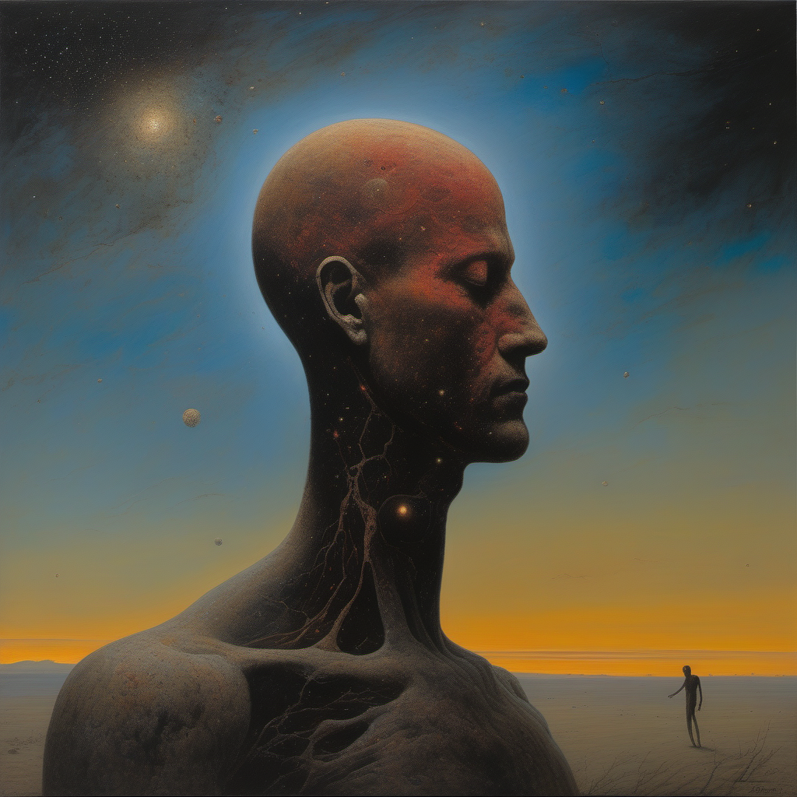
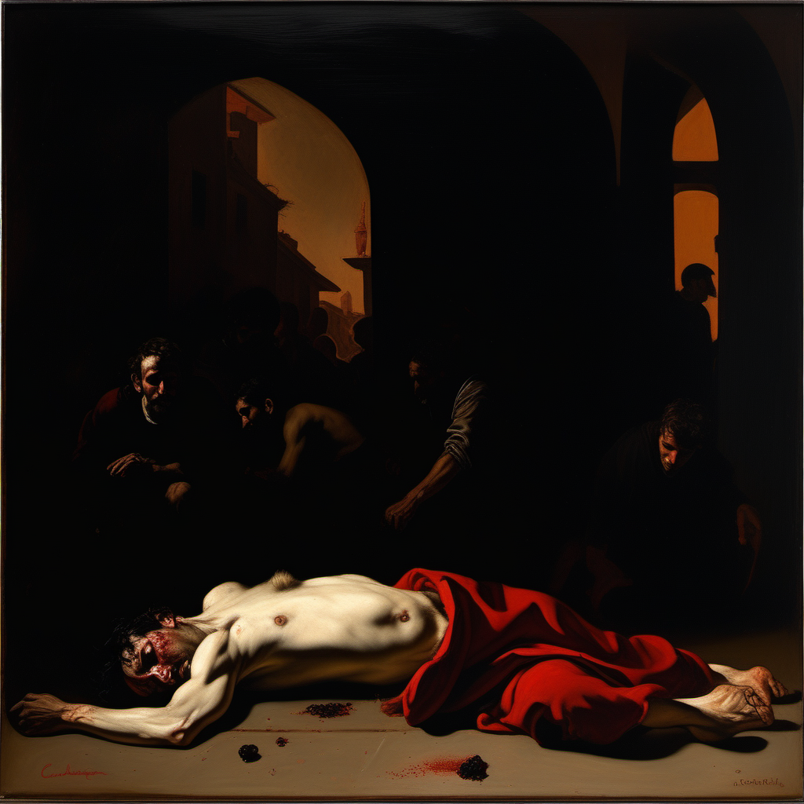
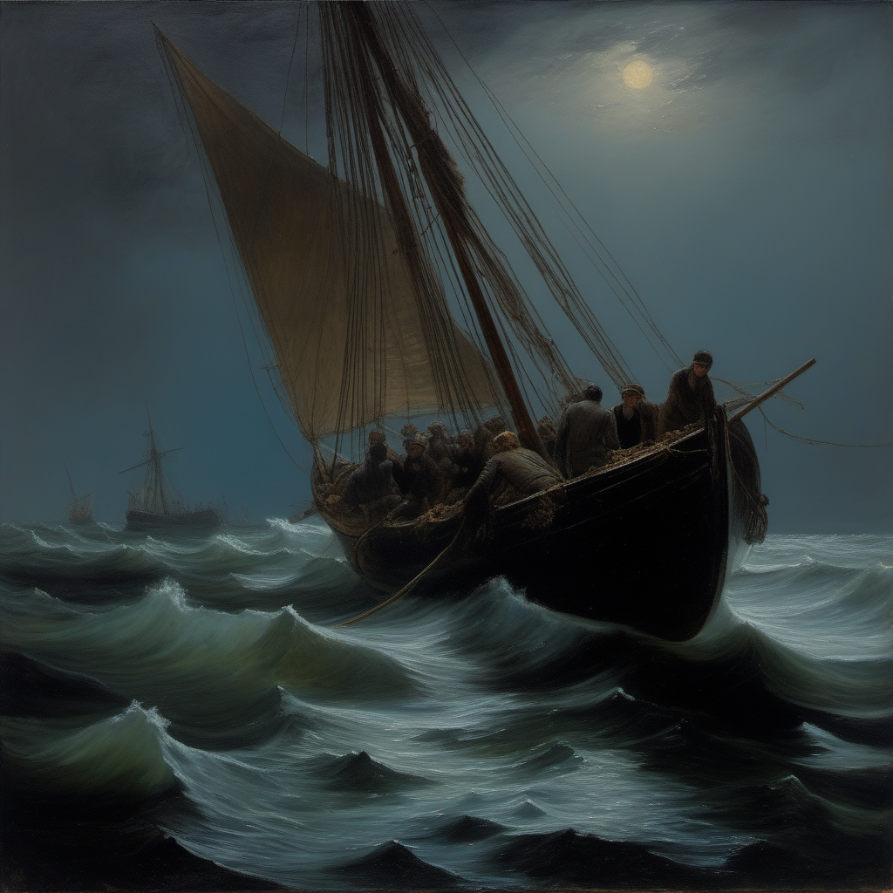
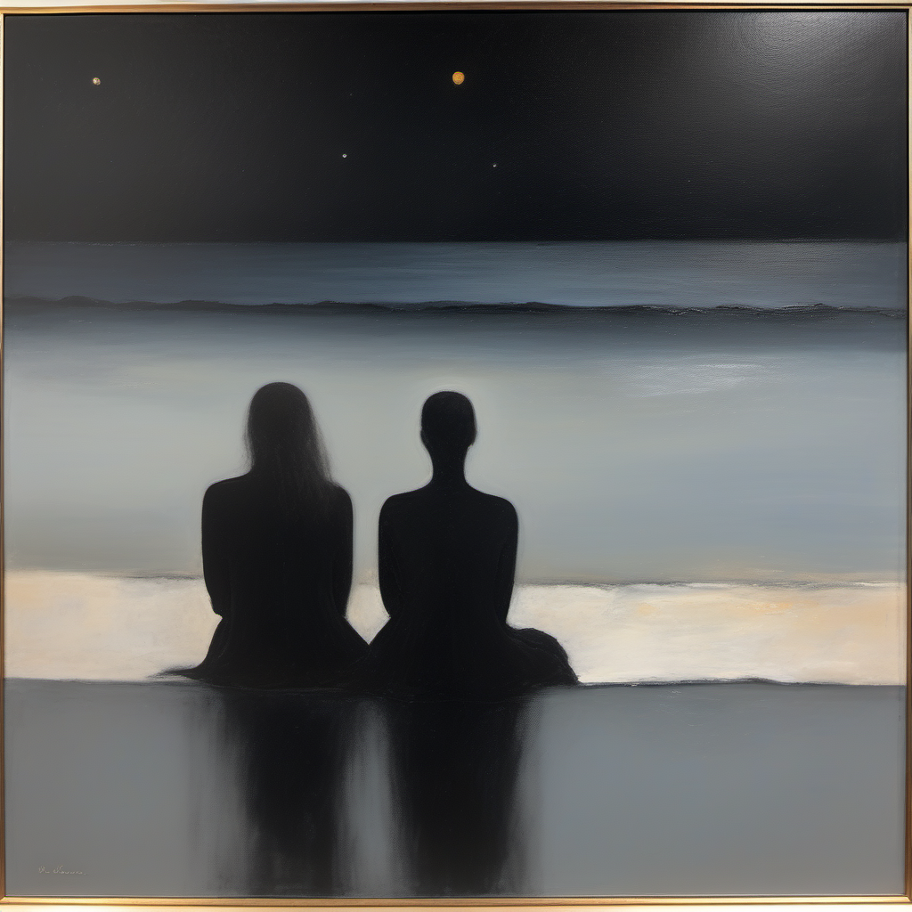
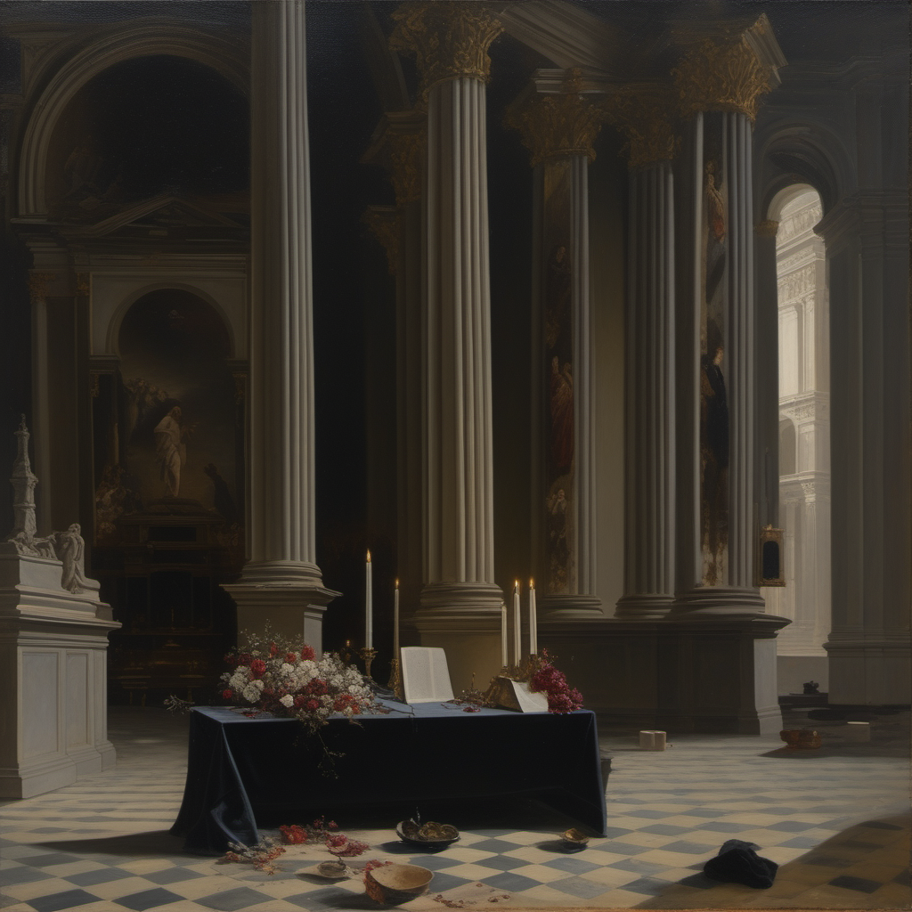
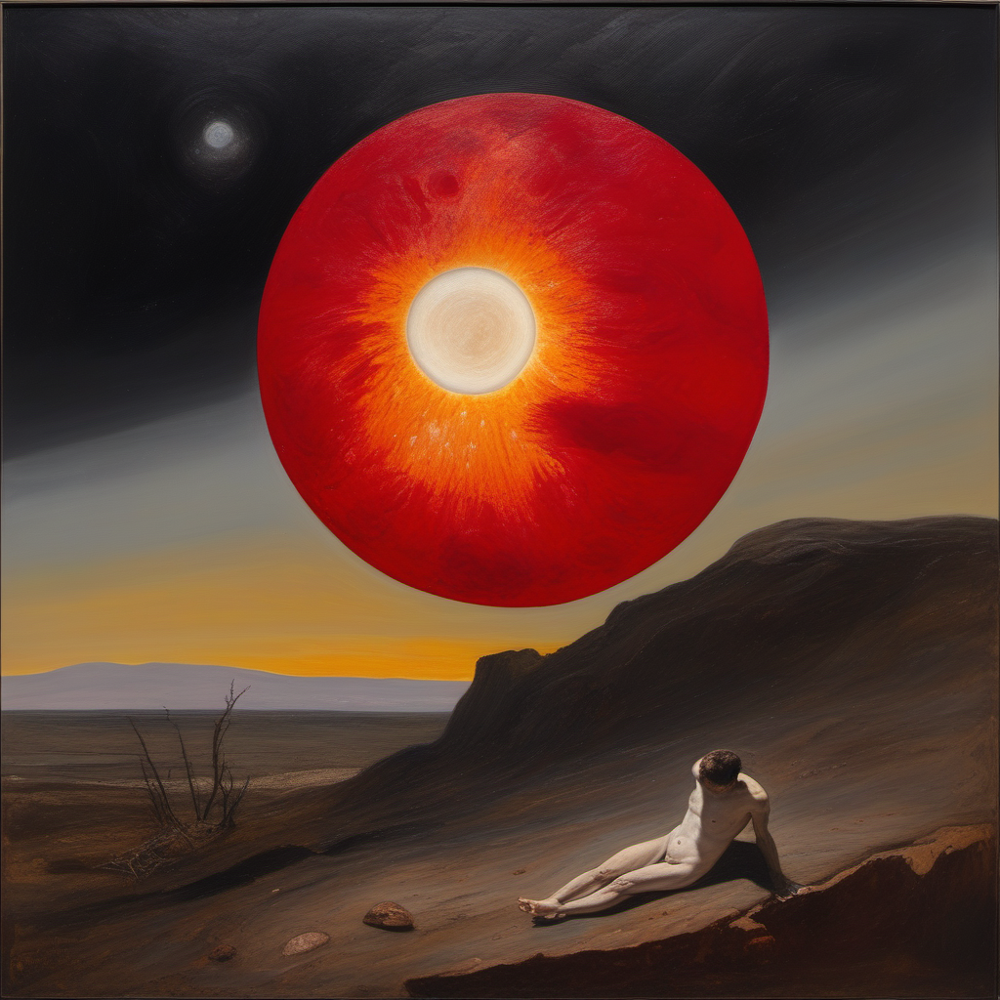
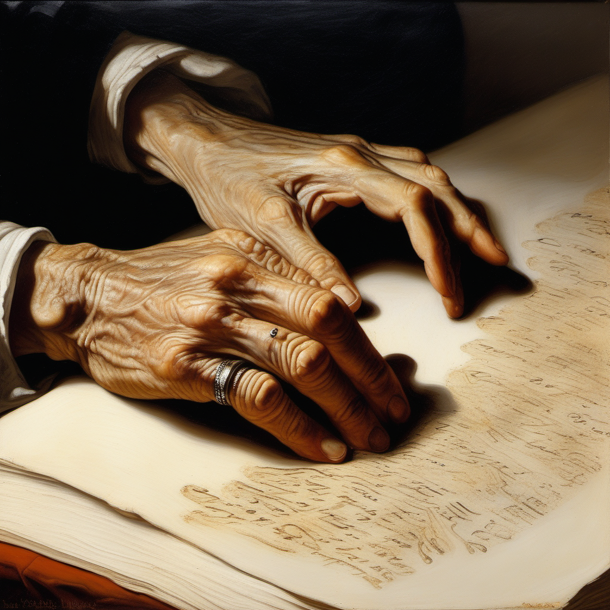
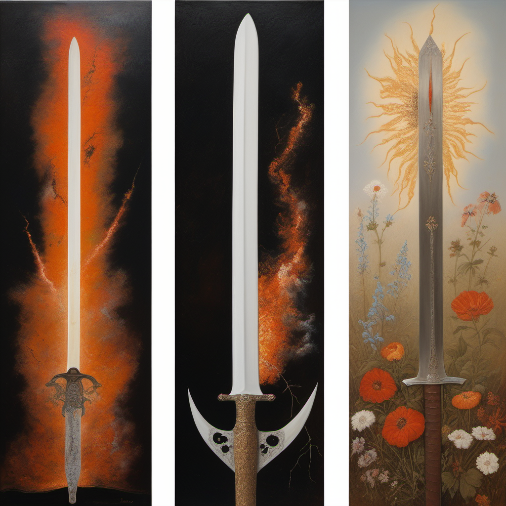
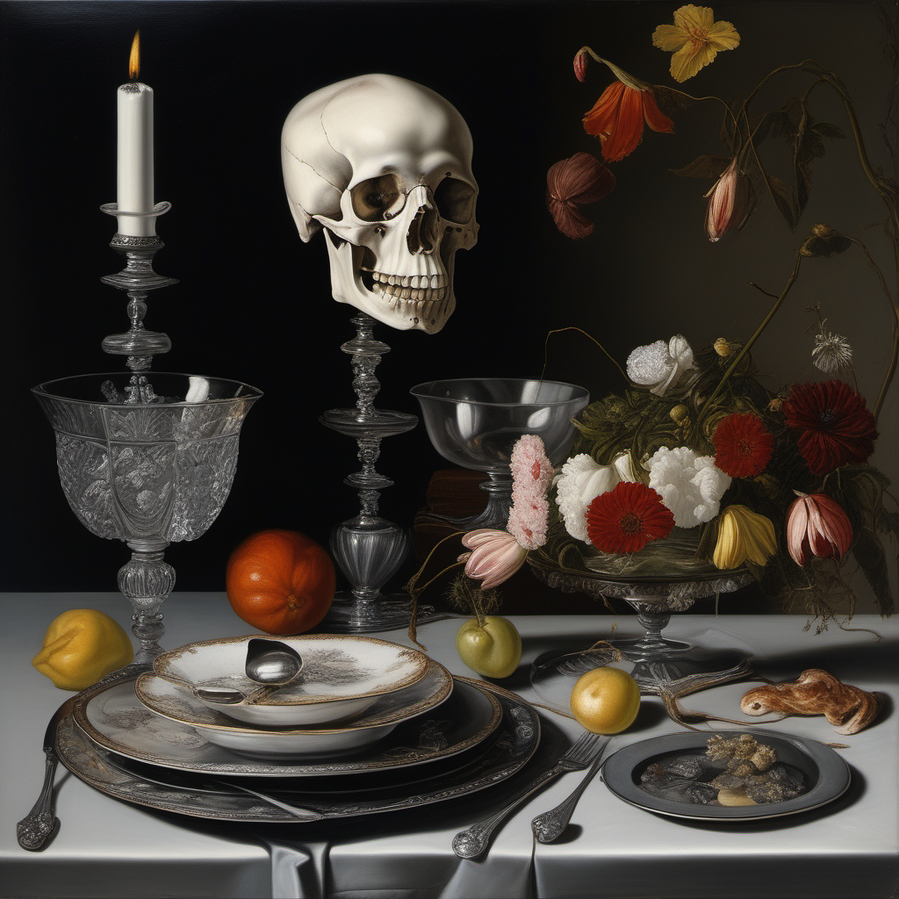
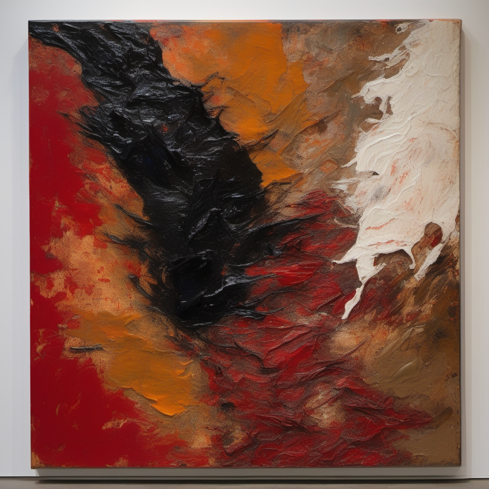

I
The Suicide of God
神の自殺
神は存在に倦んだ。
超越的統一体は自らを引き裂いた。
傷口から星が溢れ、断片が惑星になった。
顔は穏やかだった。ほとんど安堵していた。
これは創造ではない。自殺だ。
宇宙は遺書であり、我々はインクの染みである。
→ 世界の起源。なぜ全てが崩壊へ向かうのかの根本。

I
神は存在に倦んだ。
超越的統一体は自らを引き裂いた。
傷口から星が溢れ、断片が惑星になった。
顔は穏やかだった。ほとんど安堵していた。
これは創造ではない。自殺だ。
宇宙は遺書であり、我々はインクの染みである。
→ 世界の起源。なぜ全てが崩壊へ向かうのかの根本。

II
泥の中に倒れた乞食の少年。
胸に焼き印のように輝く蹄の痕。
群衆はシルエットとして通り過ぎる。
彼の目は天を見上げている。絶対的な憎悪とともに。
一つの傷が帝国を滅ぼす。
一つの屈辱が数十年の暗黒魔術を駆動する。
復讐は、力の最も純粋な形である。
→ ナミルラの原点。プレイヤーの動機の鏡像。

III
星のない空の下、黒い海を行く長い船。
漕ぎ手は水を吸った死体。
髪に海藻、腕にフジツボ。完璧な同期で櫂を引く。
目は開いているが何も見ていない。
前列の一人の頬を、一筋の生物発光の青い涙が伝う。
この絵の中の唯一の色。
船には行き先がない。
→ 死霊術の日常。労働は死後も終わらない。

IV
黒い砂浜に、二つの半透明な影が並んで座っている。
ほとんど触れ合う手。輪郭は霧に溶けかけている。
背後には永遠の暗い海。頭上には見知らぬ星が多すぎる空。
恐怖ではない。深く、穏やかな悲しみ。
彼らは痛みの向こう側にいる。欲望の向こう側にいる。
全ての向こう側にいる。
ただ、触れるか触れないかの指の間に琥珀色の光が残っている。
→ ヤダールとダリリの結末。死が救済になり得るという逆説。

V
広大な空の大聖堂の、古い石の祭壇。
祭壇の上には何も置かれていない。
しかしその空虚自体が重みと存在感を持っている。
蝋燭は冷えた蝋の水溜りになった。
花は塵に崩れた。
僧侶たちは衣を床に脱ぎ捨てたまま蒸発した。
世界で最も神聖なものは、不在そのものである。
→ モルディギアン信仰の終着点。神殿の最奥にあるもの。

VI
画面の大部分を占める、死にゆく赤い太陽。
しかし表面の質感は老いた人間の肌のようだ。
皺と、しみ。
中心に閉じた疲れた目を示唆する形。
その下に小さな最後の大陸。子供の手のように伸びている。
太陽は見下ろしている。
疲労と、謝罪の表情で。
→ ゾティークの空。太陽も神の断片。死にゆく光源のパーソナリティ。

VII
極端なクローズアップ。
古い手が、骨のように白い表面に刻まれた文字を指でなぞる。
触れた場所だけが微かに金色に光る。
手の持ち主は影の中。
しかし空の眼窩が見える。
目で見る者には理解できないことを、触覚で読む。
背後の巻物の棚は腐り崩れている。しかし盲者にはそれは必要ない。
→ 骨の回廊のNPC。碑文システムの導入。真実に最も近い者は見えない。

VIII
三幅対のような構図。
左：神の火で鍛えられる白熱する剣。
中央：数世紀後の同じ剣。錆び、ひび割れ、隙間から花が咲いている。
右：剣があった場所の塵と花粉。土にかすかな輪郭だけが残る。
創造から崩壊へ、崩壊から不在へ。
それぞれの段階がそれぞれの美しさを持つ。
塵の段階が、最も美しい。
→ 装備の耐久システムの哲学的根拠。劣化は醜さではなく、別の美。

IX
バロック静物画とホラーの融合。
銀とクリスタルが並ぶ優雅な食卓。
しかし皿には人骨がグルメ料理のように盛り付けられている。
食卓の主は顔がない。
滑らかな灰色の表面だけ。素焼きの陶器のように。
大腿骨をワイングラスのように信じられないほど繊細に持っている。
テーブルの花は葬儀の百合。既に萎れている。
→ 屍の神モルディギアンのイベント。死者を「食べる」ことは、敬意なのか冒涜なのか。

X
キャンバスは二つに分かれている。
左半分：生命の重なり合うイメージ。痛み、戦争、愛、火、都市、叫ぶ口、伸ばされる手。全てが温かい赤と橙と金。
右半分：完全に滑らかで、完全に空で、完全に黒い。しかし微かな安堵の気配がある。叫び終えた後の止められた呼吸のように。
左右の境界は直線ではない。傷が治りかけているように、波が終わる岸辺のように、有機的に揺れている。
見る者はどちらの半分を見るか選ばなければならない。
→ ゲームの最終選択のビジュアル。存在か、非存在か。